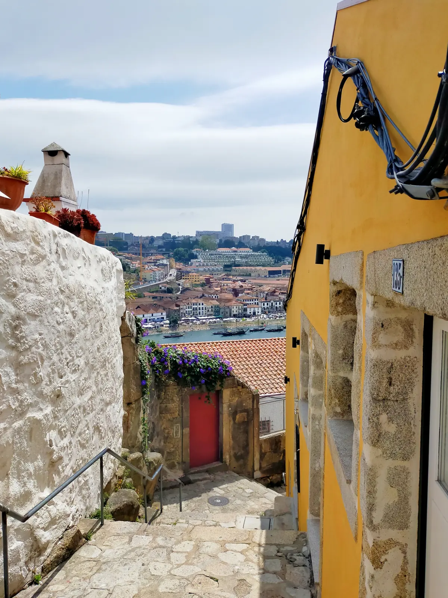
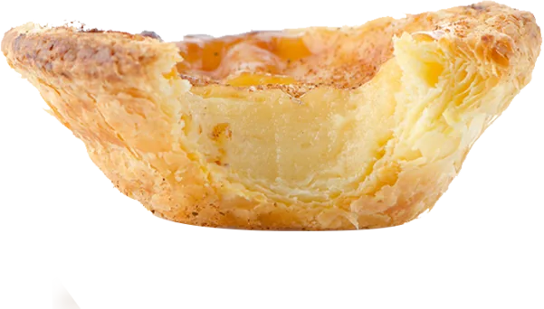

STORY
ブランドについて
エッグタルトから、
やさしい出会いを。
- Nata
- クリームポルトガル語 ／ ナタ
- Encontro
- 出会いポルトガル語 ／ エンコントロ
ポルトガルで「パステル・デ・ナタ」と呼ばれ、街角のカフェで毎日のように親しまれているエッグタルト。
ふたつの言葉を組み合わせた Nata de Encontro は、焼きたてのひとつを通して、みなさまの日常にやさしい出会いとときめきが生まれる場所でありたいと願っています。
ブランドについて
ポルトガルで「パステル・デ・ナタ」と呼ばれ、街角のカフェで毎日のように親しまれているエッグタルト。
ふたつの言葉を組み合わせた Nata de Encontro は、焼きたてのひとつを通して、みなさまの日常にやさしい出会いとときめきが生まれる場所でありたいと願っています。

こだわり
卵、ミルク、砂糖をベースにしたなめらかなカスタードと、何層にも重なったパイ生地。素材本来の味わいを、やさしい甘さで引き立てました。

数字をタップすると、説明が切り替わります
卵・牛乳・砂糖・小麦粉・バター。毎朝、店内で仕込んでいます。
少し温めると、パイの香ばしさとカスタードのなめらかさがより引き立ちます。
夏は冷蔵庫で冷やしてひんやりと。冬はトースターで温めて、焼きたてのように。
お知らせ
和栗のペーストを合わせたカスタードを、香ばしいパイ生地で焼き上げました。栗の素朴な甘さとキャラメリゼのほろ苦さをお楽しみください。
販売期間：11月1日（日）〜11月30日（月）／ ¥450（税込）
※なくなり次第終了となります。
新宿伊勢丹 本館地下1階にて、期間限定のポップアップストアを出店します。定番3種に加え、ポップアップ限定のアソートボックスもご用意しました。
いつも当店をご利用いただきありがとうございます。誠に勝手ながら、以下のとおり定休日とさせていただきます。
【10月休業日】
10月7日・14日・21日・28日の各水曜日
10月12日（月・祝）
ご来店を予定されていたお客様にはご不便をおかけいたしますが、何卒よろしくお願いいたします。
台風の接近に伴い、9月19日（土）は15:00で閉店いたします。ご来店のお客様はお気をつけてお越しください。
店舗情報